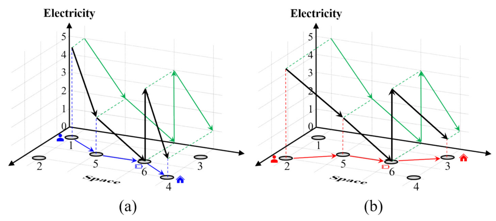
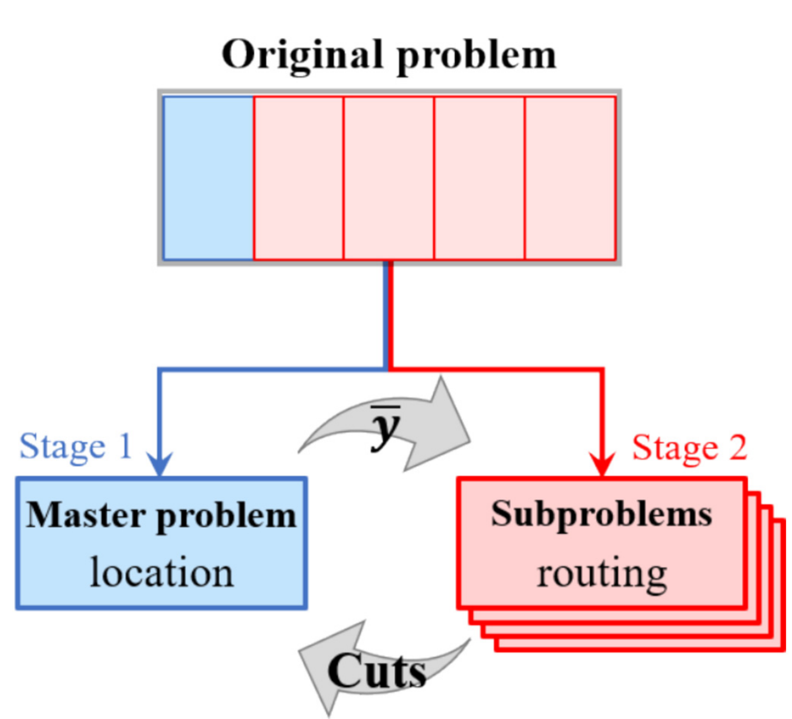
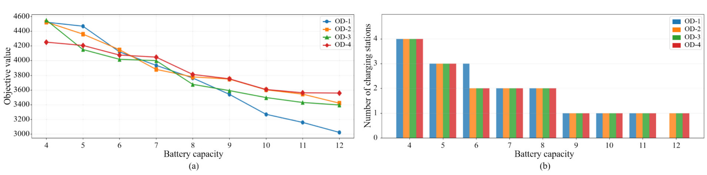

随机能耗下充电站选址—路径协同 | Applied Energy
Zhang, C., Du, M., Hu, Z., Jiang, X., Liu, Y., & Cheng, L. (2026). Benders decomposition for the charging station location-routing problem under stochastic energy consumption: A two-stage model with a space-electricity network perspective. Applied Energy, 416, 127926. https://doi.org/10.1016/j.apenergy.2026.127926
研究由东南大学、南京林业大学和埃因霍温理工大学团队完成。第一作者 Chenhao Zhang 隶属东南大学；通讯作者 Lin Cheng 隶属东南大学。论文把充电站选址、居民出行路径、部分充电和随机能耗放进同一两阶段优化框架。
结论先行
充电站规划不能只按固定里程或最短路布点。能耗随机性会改变可行充电路径；允许部分充电和绕行后，站点配置必须同时覆盖出行需求与电量状态。作者的贡献是用空间—电量网络把这一耦合显式写入模型，并以 Benders 分解处理大规模情景。
模型：空间与电量同时决定可达性

图 1说明“到达节点”并不等于“可继续行驶”。 网络节点同时记录位置与 SOC，弧段记录行驶、充电或等待所造成的电量变化。这样可以识别传统空间网络遗漏的不可行路径，也能表示部分充电与重复充电。该图是建模结构，并不直接给出某城市应建多少站。
算法：把设施决策与情景路径分开求解

图 2给出计算上的关键取舍。 主问题选择充电站，多个情景子问题在已给定站点下寻找可行路径与代价，并将信息以 Benders cuts 返回。多切割与稳定化用于减少迭代摇摆。它让模型能够处理随机情景，但求解效果仍依赖场景数、网络规模和割的质量。
真实网络：电池容量和随机能耗改变站点价值

图 3显示电池容量不是独立的车辆参数。 当容量改变，绕行充电的必要性、站点覆盖压力与路径选择都会随之变化。对规划者，这意味着站网方案应与车队电池配置共同评估；对运营者，不能把“更大电池”简单等同于“更少基础设施”。图中结果来自论文的网络与需求假设，跨地区应用需要重新校准 OD 需求和能耗场景。
启示
对交通主管部门，站点规划应将需求波动与实际能耗不确定性纳入，而不是只按平均能耗设定覆盖半径。对运营商，设施投资和路径调度应共用同一电量约束模型；当部分充电和绕行成本显著时，单独优化其中一项会低估系统成本。
局限性
论文以情景刻画随机能耗，结果受情景生成、OD 需求和电池放电参数影响。空间—电量网络仍是空间—电量模型，而非显式时间索引网络；论文评估的是路径与设施决策的协同，不直接给出排队、充电桩功率时序或电网容量的动态约束。将其用于项目投资前，需要补充当地充电服务能力、配电接入和真实运营数据。